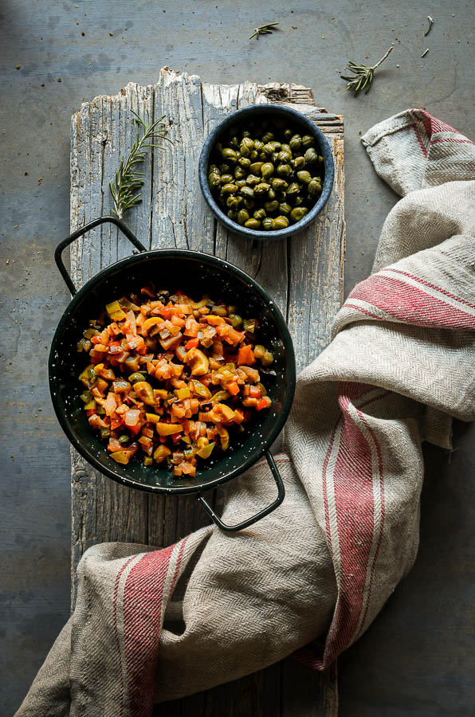

La caponata siciliana es un plato de verduras fantástico, perfecto para servir como guarnición o, en plan
informal y de picoteo, sobre pan tostado. Cuanto mejores sean las verduras, más sabroso será el resultado.
Especialmente las berenjenas, que son las protagonistas indiscutibles de esta receta. Vamos a verla.

Preparación
30 minutos
Elaboración
30 minutos
Tiempo total
1 hora
Para 6-8 personas
Tipo de receta: Vegana
Cocina: Italiana
Ingredientes
1 k de berenjenas
3 ramas de apio
2 cebollas
2 dientes de ajo
1 k de tomates maduros
200 g de aceitunas verdes sin hueso
50 g de alcaparras desaladas
15 g de azúcar
15 ml de vinagre blanco
Aceite de oliva virgen extra
Sal
Pimienta negra
Instrucciones
Lavamos las berenjenas, retiramos el pedúnculo y cortamos en dados de 2-3 cm.
Colocamos los dados de berenjena en un colador, espolvoreamos con abundante sal y dejamos reposar 30 minutos
para que suelten los jugos amargos.
Mientras tanto preparamos el resto de verduras: lavamos y picamos las ramas de apio en dados más pequeños
que los de berenjena; pelamos y picamos las cebollas; pelamos y picamos finamente los dientes de ajo y
pelamos los tomates y cortamos en cuadraditos. Reservamos.
Transcurrido el tiempo de reposo de la berenjena, la lavamos bajo el grifo de agua fría. Escurrimos y
secamos bien con papel absorbente.
Calentamos 2-3 cucharadas de aceite de oliva virgen extra en una cazuela y rehogamos las berenjenas durante
7-8 minutos o hasta que estén doradas.
Incorporamos el apio a la cazuela y continuamos rehogando.
Calentamos un poco de aceite en una sartén y pochamos la cebolla unos minutos. Una vez pochada la añadimos a
la cazuela con la berenjena y el apio.
Añadimos un poco más de aceite a la sartén que hemos empleado para pochar la cebolla hemos preparado la
cebolla. Echamos el ajo picado y, antes de que empiece a dorarse, añadimos el tomate. Cocemos durante 5
minutos a fuego medio y reservamos.
Picamos las aceitunas y las añadimos a la cazuela junto con las alcaparras, el vinagre, el azúcar, una pizca
de sal y pimienta negra recién molida. Cocemos a fuego suave durante 5 minutos más. Para terminar añadimos
el tomate a la cazuela, removemos para integrar y apartamos del fuego.
Dejamos reposar unos minutos antes de servir o, incluso mejor, la guardamos hasta el día siguiente. El
reposo le sienta de maravilla.